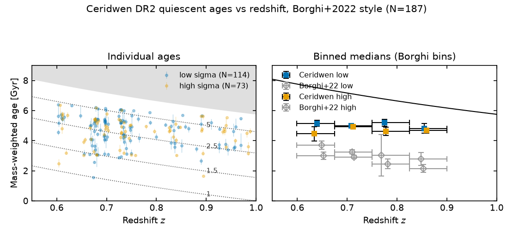
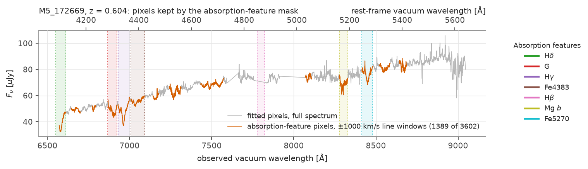
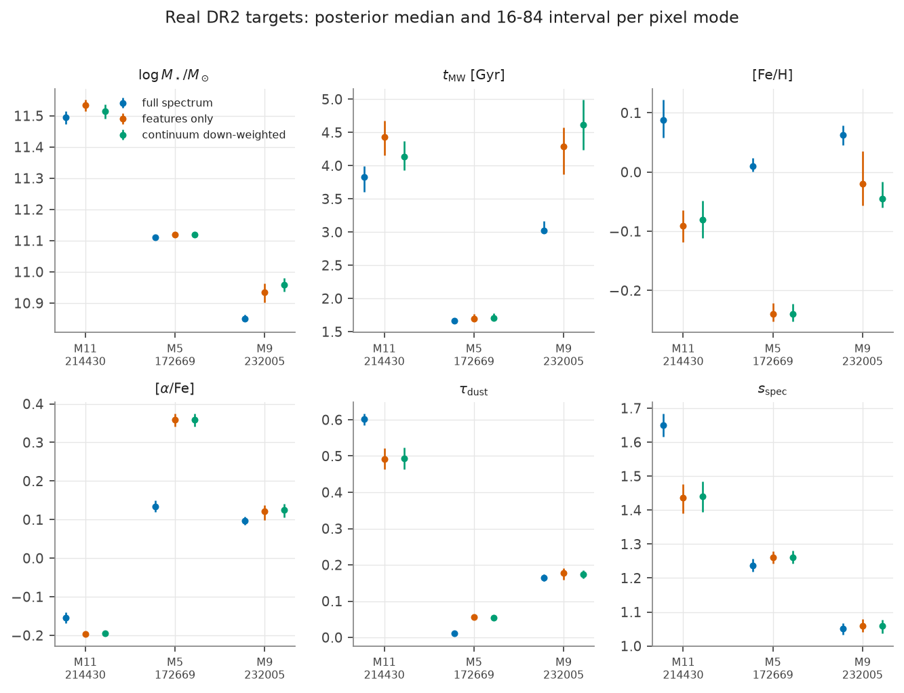
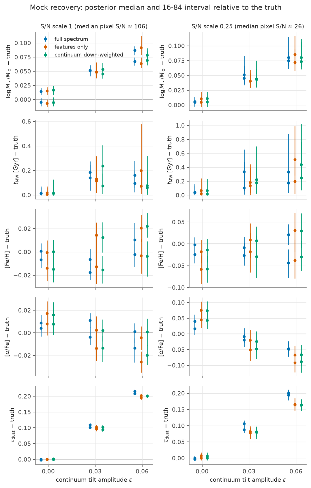
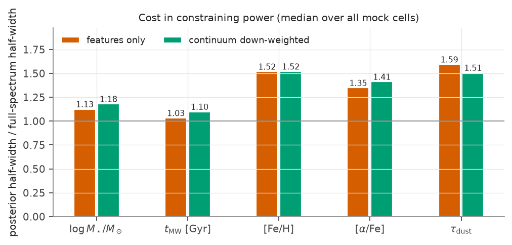

Ceridwen common results board
Authoritative map of all completed Ceridwen stellar population inference results, figures, data tables, benchmarks, and interactive models. Every mapped output resolves directly to disk, with live push provenance and pending researcher decisions.
Corrected Calibration Science (Authoritative Audit)
Flux ratio sign: DR2 spectra are brighter than production COSMOS2015 3-arcsecond aperture photometry, with in-band spectrum-to-photometry ratios of 1.26 to 1.48 outside IA679 (production fits sample scale factors of 1.24 and 1.49).
Tilt origin: Corrected photometry drives scale factors to 0.99 and 0.92 and removes both scale offset and M4's polynomial tilt (shifting from −20% to +0.4%). M5 retains a −20% tilt due to dust-polynomial degeneracy driven by an underlying 0.3-mag optical-to-NIR stellar population model mismatch.
Status at a glance
| Analysis Domain | Key Scientific Finding | Primary Deliverables | Push Provenance | Decisions for Liu Hao |
|---|---|---|---|---|
| 187-Galaxy DR2 Sample | Median mass-weighted age 3.02 Gyr; median assembly interval Δt = 2.46 Gyr; 0/187 fit failures. | Analysis Page · Summary CSV · Results Dir | Pushed 4c3ad00 |
None (production complete). |
| Borghi+2022 Age vs z | Ceridwen medians flat near 3.0 Gyr, +0.26 Gyr above re-binned N=140 Borghi catalogue; weak velocity dispersion split. | Figure PNG · Vector PDF · Source Table | Pushed 98d9c4b |
None (catalogue matches finalized). |
| Absorption-Line Mask | Masked/feature-only modes keep tilt bias and widen posteriors 1.1–1.6×; moves real targets up to 22σ. Recommended default: OFF. | Analysis Page · Summary CSV · Grid Results | Pushed 7dae142 |
Confirm default OFF, line list, and feature window. |
| Calibration & Tilt Origin | Spectra brighter than 3" photometry (×1.26–1.48); corrected photometry eliminates M4 tilt (+0.4%); M5 retains −20% tilt from dust-model degeneracy. | Worktree Page · Arms CSV · Tilt Results | Pushed 85c1e4a |
1. Accept corrected photometry + order-3 poly for 187 galaxies? 2. Investigate young-galaxy 0.3-mag optical-to-NIR mismatch first? 3. Merge branch calibration-polynomial? |
| Formation Timescales | Median Δt = 2.46 Gyr; flat across formation epoch; Spearman correlation with mass and [α/Fe] is 0.00 in 7-bin SFH. | Epoch PNG · Mass PNG · Alpha PNG | Pushed 4c3ad00 |
None. |
| Fit Quality Diagnostics | 0/187 failed fits; worst joint reduced χ²/ν = 2.69 (139662), 2.55 (253688), 2.34 (101089). | Quality PNG · Quality PDF | Pushed 4c3ad00 |
None. |
| GPU & Production Benchmarks | 1 fit per GPU default; concurrent runs offer no throughput gain on tested 8-GB and Blackwell GPUs; fixed-grid SFH default. | Benchmark Page · Runs Dir | Pushed d5cfe51 |
None. |
| Interactive Checkpoint Evolution | Responsive viewer stepping through prior predictive, partial checkpoints, and converged rescue with credible bands and residuals. | Interactive HTML · CDP Evidence | Pushed 3a0eb6b |
None (mobile & desktop verified). |
{kind=link}
187-galaxy DR2 quiescent sample (final set)
Analysis page: analyses/dr2-quiescent-sample.html. Master catalogue table: results/dr2-quiescent-summary.csv (187 galaxies, 49 columns including t20, t50, t80, Δt). Production run directory: results/rtx-5060-dr2-quiescent-full-spectrum/ (187 individual target folders). Exploratory chronometer notebook: ceridwen_cosmic_chronometer.ipynb and summary data: ceridwen_cosmic_chronometer_summary.h5. Builders: build_dr2_quiescent_summary.py, plot_dr2_headline_candidates.py.

Mass-weighted ages stay near 3 Gyr; the 68-galaxy Borghi overlap appears in the residual strip.

All panels contain 187 objects; median redshift is 0.73 and median mass-weighted age is 3.02 Gyr.
Scientific caveat: The 7-bin SFH basis limits fine temporal resolution. Mass-weighted ages reflect non-parametric composite populations and are not direct analogs of Borghi SSP-equivalent Lick ages.
Borghi+2022 age versus redshift comparison
Standalone figure: results/figures/borghi2022-age-vs-z.png (and PDF). Source data table: borghi2022_legac_dr2_spectrum_matches copy.tsv. Generation script: scripts/plot_borghi2022_age_vs_z.py.

Ceridwen medians average 0.26 Gyr above the re-binned Borghi ages and stay near 3 Gyr.
Finding: Ceridwen mass-weighted ages stay flat near 3.0 Gyr from z=0.6 to z=0.9, averaging +0.26 Gyr above re-binned Borghi values. The velocity dispersion split (σ < 215 km/s vs σ ≥ 215 km/s) is weak compared to Borghi's reported gradient.
Absorption-line mask experiment
Draft analysis page: analyses/absorption-line-mask.html. Results summary: results/absorption-mask/summary.csv and summary.json. Target Fisher analysis: fisher_M5_172669.json. 45-fit execution directory: results/absorption-mask/. Analysis scripts: absorption_mask_analysis.py, absorption_mask_report.py.

Shows the observed-frame M5_172669 pixels retained by the absorption-feature mask.

Three DR2 targets show pixel-mode shifts up to 22 full-spectrum sigma.

Masked modes retain the continuum-tilt bias seen in the full-spectrum mocks.

Masked posterior widths are typically 1.1 to 1.6 times the full-spectrum widths.
- Recommendation: Keep mask OFF by default for production fits. Feature-only and down-weighted modes fail to eliminate continuum tilt bias, widen posteriors by 1.1–1.6×, and perturb real galaxy posteriors by up to 22 full-spectrum σ.
- Decisions for Liu Hao: Confirm keeping mask off as production default; choose whether to retain or revise the specific absorption line list and window widths.
Calibration polynomial and tilt origin
Worktree analysis page (pushed on branch origin/calibration-polynomial at commit 85c1e4a): ceridwen-calibration-polynomial.html. Analysis notebook: tilt-origin-2026-09-02/analysis.ipynb. Quantitative summaries: arms.csv and ibands.csv. Completed tilt run directory: results/tilt-origin-2026-09-02/. Superseded local snapshot: results/calibration-polynomial-2026-09-02/. Experiment scripts: calibration_polynomial_experiment.py, download_legac_dr2_aperture_photometry.py, tilt_origin_runner.py, tilt_origin_vast.py.

Explains how the multiplicative polynomial calibrates the spectrum onto the photometry.

The tested order-1, order-3, and order-5 polynomials remove injected smooth-tilt bias; the polynomial broadens dust constraints.

Shows recovered posterior polynomial bands for the initial mock and real-target arms.

Shows how polynomial choices move the M4_108989 and M5_172669 stellar-population posteriors.

The spectrum-to-catalogue ratios show the spectra are brighter than the production 3-arcsecond fluxes and are flat against corrected or UltraVISTA total photometry.

Corrected photometry removes M4's tilt; M5 retains structured optical-to-NIR residuals at the line-based solution.

M5 variants retain a minus-16 to minus-24 percent polynomial tilt; corrected-photometry M4 variants are flat.

Compares both targets across photometry source, calibration polynomial, floor, dust law, and fit mode.
- Accept corrected photometry for production? Adopting corrected aperture photometry plus an order-3 polynomial and all 12 photometric bands eliminates M4's −20% tilt (reducing residual tilt to +0.4%) and normalizes scale offsets.
- Investigate young-galaxy (M5) optical-to-NIR mismatch first? M5's residual tilt (−16% to −24%) is driven by a 0.3-mag optical-NIR model tension with dust degeneracy.
- Merge branch
calibration-polynomial? Branch85c1e4ais pushed and tested; merge once strategy for 187 galaxies is accepted.
Formation timescales (Δt)
Analysis script: scripts/plot_dr2_formation_timescale.py. Mass assembly interval Δt is defined as t20 − t80 (the lookback time interval during which the middle 60% of stellar mass was formed).

Median mass-assembly interval is 2.46 Gyr and is flat with formation epoch and observed redshift.

The reported Spearman correlation between mass and the mass-assembly interval is 0.00.

The reported Spearman correlation between alpha enhancement and the mass-assembly interval is 0.00.
Finding: Median Δt is 2.46 Gyr across the sample. There is no significant correlation between Δt and stellar mass (Spearman 0.00) or [α/Fe] (Spearman 0.00), with timescales constrained by the coarseness of the 7-bin SFH basis.
Fit quality diagnostics
Diagnostic plotting script: scripts/plot_dr2_distributions_quality.py. Covers likelihood calls, log-evidence ln(Z), and joint reduced χ²/ν across all 187 galaxies.

All 187 stored diagnostics pass; the worst reported joint chi-squared per degree of freedom is 2.69.
Finding: Zero sampling failures (187/187 completed). The worst joint χ²/ν values are 2.69 (galaxy 139662), 2.55 (galaxy 253688), and 2.34 (galaxy 101089).
Performance and production benchmarks
Benchmark guide page: analyses/ceridwen-gpu-benchmarks.html. Comprehensive run archive: benchmarks/ceridwen/runs/.
| Report / Specification | Artifact Link | Format | Status | Key Performance Recommendation |
|---|---|---|---|---|
| Vast.ai Multi-GPU Sweep Manifest | ceridwen_vast_gpu_sweep_manifest_2026-08-27.json | JSON | Pushed | 49 benchmark executions documenting scaling. |
| Predicted vs Measured Summary | ceridwen_vast_predicted_vs_measured_gpu_benchmark_summary_2026-08-26.csv | CSV | Pushed | Empirical timing model across cloud hosts. |
| 3090 / 4090 / H100 Full Summary | ceridwen_vast_3090_4090_h100_joint_full_benchmark_summary_2026-08-26.csv | CSV | Local / Unpushed | High-end card comparisons and memory ceilings. |
| Production 8GB GPU Sizing | fits_per_gpu_production_8gb_20260902.json | JSON | Pushed | 1 fit per GPU default; avoids out-of-memory crashes. |
| Blackwell RTX 5060 8GB | fits_per_gpu_production_blackwell_rtx5060_8gb_20260902.json | JSON | Pushed | Primary production card: fast, cost-effective. |
| Blackwell RTX 5060 Ti 16GB | fits_per_gpu_production_blackwell_rtx5060ti_16gb_20260902.json | JSON | Pushed | Large memory headroom for high-resolution grids. |
| Blackwell RTX 5070 12GB | fits_per_gpu_production_blackwell_rtx5070_12gb_20260902.json | JSON | Pushed | Highest per-card throughput in Blackwell series. |
Interactive checkpoint spectrum evolution (Delivered)
Interactive standalone viewer: ceridwen-checkpoint-spectrum-evolution.html (delivered and verified responsive at 390×844 on iPhone/iPad). Screen verification captures: screenshots directory. Generation script: plot_ceridwen_checkpoint_evolution.py. Test suites: test_plot_ceridwen_checkpoint_evolution.py, test_checkpoint_spectrum.py, test_ns_checkpoint.py. Model modules: ceridwen/plotting/checkpoint.py, ceridwen/sampler/nested.py.
Interactive Spectrum Playback & Checkpoint Rescue
Pushed
Displays the evolution of nested sampler convergence for galaxy 210210: from prior predictive spectrum through intermediate nested sampling dead points, culminating in the converged posterior prediction. Includes full 16–84% credible envelope, residual strips, and live parameter telemetry.
Launch interactive visualization:
Open Interactive Checkpoint Viewer →Complete artifact catalog (79 validated items)
Complete manifest of all 79 deliverables audited and validated against the live filesystem. All paths resolve directly relative to this wiki page.
| ID | Title / Deliverable | Category | Media Type | Wiki-Relative Link | Push Status | Decisions / Notes |
|---|---|---|---|---|---|---|
board-current-html |
Current Ceridwen results board | board | text/html |
ceridwen-results.html | Pushed | Rebuild this page from the replacement manifest. |
dr2-analysis-page |
DR2 quiescent sample analysis | analysis-page | text/html |
dr2-quiescent-sample.html | Pushed | — |
dr2-headline-png |
DR2 age-redshift headline PNG | final-figure | image/png |
dr2-quiescent-sample/headline-age-redshift.png | Pushed | — |
dr2-headline-pdf |
DR2 age-redshift headline PDF | final-figure | application/pdf |
dr2-quiescent-sample/headline-age-redshift.pdf | Pushed | — |
dr2-distributions-png |
DR2 parameter distributions PNG | final-figure | image/png |
dr2-quiescent-sample/distributions-1d.png | Pushed | — |
dr2-distributions-pdf |
DR2 parameter distributions PDF | final-figure | application/pdf |
dr2-quiescent-sample/distributions-1d.pdf | Pushed | — |
dr2-fit-quality-png |
DR2 fit-quality diagnostics PNG | final-figure | image/png |
dr2-quiescent-sample/fit-quality.png | Pushed | — |
dr2-fit-quality-pdf |
DR2 fit-quality diagnostics PDF | final-figure | application/pdf |
dr2-quiescent-sample/fit-quality.pdf | Pushed | — |
dr2-timescale-epoch-png |
Formation timescale versus epoch PNG | final-figure | image/png |
dr2-quiescent-sample/dt-vs-formation-epoch.png | Pushed | — |
dr2-timescale-epoch-pdf |
Formation timescale versus epoch PDF | final-figure | application/pdf |
dr2-quiescent-sample/dt-vs-formation-epoch.pdf | Pushed | — |
dr2-timescale-mass-png |
Formation timescale versus mass PNG | final-figure | image/png |
dr2-quiescent-sample/dt-vs-mass.png | Pushed | — |
dr2-timescale-mass-pdf |
Formation timescale versus mass PDF | final-figure | application/pdf |
dr2-quiescent-sample/dt-vs-mass.pdf | Pushed | — |
dr2-timescale-alpha-png |
Formation timescale versus alpha enhancement PNG | final-figure | image/png |
dr2-quiescent-sample/dt-vs-alpha.png | Pushed | — |
dr2-timescale-alpha-pdf |
Formation timescale versus alpha enhancement PDF | final-figure | application/pdf |
dr2-quiescent-sample/dt-vs-alpha.pdf | Pushed | — |
dr2-summary-csv |
DR2 187-galaxy summary table | data-summary | text/csv |
../../results/dr2-quiescent-summary.csv | Pushed | — |
dr2-production-results-dir |
DR2 187-galaxy production result directory | result-directory | inode/directory |
../../results/rtx-5060-dr2-quiescent-full-spectrum | Partial | — |
chronometer-notebook |
Ceridwen cosmic-chronometer notebook | notebook | application/x-ipynb+json |
../../results/rtx-5060-dr2-quiescent-full-spectrum/ceridwen_cosmic_chronometer.ipynb | Pushed | — |
chronometer-summary-h5 |
Ceridwen chronometer summary data | data-summary | application/x-hdf5 |
../../results/rtx-5060-dr2-quiescent-full-spectrum/ceridwen_cosmic_chronometer_summary.h5 | Pushed | — |
dr2-summary-builder |
DR2 summary-table builder | analysis-script | text/x-python |
../../scripts/build_dr2_quiescent_summary.py | Pushed | — |
dr2-headline-script |
DR2 headline plotting script | analysis-script | text/x-python |
../../scripts/plot_dr2_headline_candidates.py | Pushed | — |
dr2-distribution-quality-script |
DR2 distribution and quality plotting script | analysis-script | text/x-python |
../../scripts/plot_dr2_distributions_quality.py | Pushed | — |
dr2-timescale-script |
DR2 formation-timescale plotting script | analysis-script | text/x-python |
../../scripts/plot_dr2_formation_timescale.py | Pushed | — |
borghi-age-redshift-png |
Borghi-style median age versus redshift PNG | final-figure | image/png |
../../results/figures/borghi2022-age-vs-z.png | Pushed | — |
borghi-age-redshift-pdf |
Borghi-style median age versus redshift PDF | final-figure | application/pdf |
../../results/figures/borghi2022-age-vs-z.pdf | Pushed | — |
borghi-source-table |
Borghi DR2 matched age table | source-data | text/tab-separated-values |
../../data/processed/borghi2022_legac_dr2/borghi2022_legac_dr2_spectrum_matches copy.tsv | Pushed | — |
borghi-plot-script |
Borghi age-redshift plotting script | analysis-script | text/x-python |
../../scripts/plot_borghi2022_age_vs_z.py | Pushed | — |
absorption-analysis-page |
Absorption-line mask analysis | analysis-page | text/html |
absorption-line-mask.html | Pushed | Keep mask default off?; Change the line list?; Change the feature window? |
absorption-feature-windows-png |
Absorption feature windows PNG | final-figure | image/png |
absorption-mask/feature_windows_M5_172669.png | Pushed | Change the line list?; Change the feature window? |
absorption-mock-bias-png |
Absorption-mask mock bias PNG | final-figure | image/png |
absorption-mask/mock_bias_vs_tilt.png | Pushed | Keep mask default off? |
absorption-mock-width-png |
Absorption-mask posterior-width PNG | final-figure | image/png |
absorption-mask/mock_width_ratio.png | Pushed | Keep mask default off? |
absorption-real-posteriors-png |
Absorption-mask real-target posteriors PNG | final-figure | image/png |
absorption-mask/real_targets_posteriors.png | Pushed | Keep mask default off? |
absorption-summary-csv |
Absorption-mask numerical summary CSV | data-summary | text/csv |
../../results/absorption-mask/summary.csv | Pushed | Keep mask default off? |
absorption-summary-json |
Absorption-mask numerical summary JSON | data-summary | application/json |
../../results/absorption-mask/summary.json | Pushed | Keep mask default off? |
absorption-fisher-json |
Absorption-mask Fisher analysis JSON | data-summary | application/json |
../../results/absorption-mask/fisher_M5_172669.json | Pushed | — |
absorption-results-dir |
Absorption-mask 45-fit result directory | result-directory | inode/directory |
../../results/absorption-mask | Partial | Keep mask default off? |
absorption-analysis-script |
Absorption-mask analysis script | analysis-script | text/x-python |
../../scripts/absorption_mask_analysis.py | Pushed | — |
absorption-report-script |
Absorption-mask report generator | analysis-script | text/x-python |
../../scripts/absorption_mask_report.py | Pushed | — |
calibration-analysis-page |
Calibration-polynomial and tilt-origin analysis | analysis-page | text/html |
../../tmp/worktrees/astro-calibration-polynomial/wiki/analyses/ceridwen-calibration-polynomial.html | Pushed | Accept corrected photometry plus order-3 polynomial and all 12 bands for the 187-galaxy sample?; Investigate the young-galaxy 0.3-mag optical-to-NIR mismatch first?; Merge calibration-polynomial? |
calibration-explainer-png |
Calibration-polynomial explainer PNG | final-figure | image/png |
../../tmp/worktrees/astro-calibration-polynomial/wiki/analyses/calibration-polynomial-explainer.png | Pushed | — |
calibration-mock-bias-png |
Calibration-polynomial mock bias PNG | final-figure | image/png |
../../tmp/worktrees/astro-calibration-polynomial/wiki/analyses/calibration-polynomial-mock-bias.png | Pushed | — |
calibration-real-posteriors-png |
Calibration-polynomial real-target posteriors PNG | final-figure | image/png |
../../tmp/worktrees/astro-calibration-polynomial/wiki/analyses/calibration-polynomial-real-posteriors.png | Pushed | — |
calibration-vectors-png |
Calibration-polynomial vectors PNG | final-figure | image/png |
../../tmp/worktrees/astro-calibration-polynomial/wiki/analyses/calibration-polynomial-vectors.png | Pushed | — |
tilt-origin-ibands-png |
Tilt-origin in-band flux ratios PNG | final-figure | image/png |
../../tmp/worktrees/astro-calibration-polynomial/wiki/analyses/calibration-polynomial-tilt-origin-ibands.png | Pushed | Accept corrected photometry for production? |
tilt-origin-photometry-png |
Tilt-origin photometric residuals PNG | final-figure | image/png |
../../tmp/worktrees/astro-calibration-polynomial/wiki/analyses/calibration-polynomial-tilt-origin-photometry.png | Pushed | Investigate the young-galaxy mismatch first? |
tilt-origin-posteriors-png |
Tilt-origin posterior comparison PNG | final-figure | image/png |
../../tmp/worktrees/astro-calibration-polynomial/wiki/analyses/calibration-polynomial-tilt-origin-posteriors.png | Pushed | Accept the recommended default? |
tilt-origin-vectors-png |
Tilt-origin polynomial vectors PNG | final-figure | image/png |
../../tmp/worktrees/astro-calibration-polynomial/wiki/analyses/calibration-polynomial-tilt-origin-vectors.png | Pushed | Investigate the young-galaxy mismatch first? |
tilt-origin-results-dir |
Tilt-origin fit records | result-directory | inode/directory |
../../tmp/worktrees/astro-calibration-polynomial/results/tilt-origin-2026-09-02 | Partial | Choose durable storage before deleting the worktree. |
tilt-origin-analysis-notebook |
Tilt-origin executed analysis notebook | notebook | application/x-ipynb+json |
../../tmp/worktrees/astro-calibration-polynomial/results/tilt-origin-2026-09-02/analysis.ipynb | Pushed | — |
tilt-origin-arms-csv |
Tilt-origin fit-arm summary CSV | data-summary | text/csv |
../../tmp/worktrees/astro-calibration-polynomial/results/tilt-origin-2026-09-02/arms.csv | Pushed | — |
tilt-origin-ibands-csv |
Tilt-origin in-band flux-ratio CSV | data-summary | text/csv |
../../tmp/worktrees/astro-calibration-polynomial/results/tilt-origin-2026-09-02/ibands.csv | Pushed | — |
calibration-experiment-script |
Calibration-polynomial experiment script | analysis-script | text/x-python |
../../tmp/worktrees/astro-calibration-polynomial/scripts/calibration_polynomial_experiment.py | Pushed | — |
calibration-photometry-download-script |
LEGA-C aperture-photometry download script | analysis-script | text/x-python |
../../tmp/worktrees/astro-calibration-polynomial/scripts/download_legac_dr2_aperture_photometry.py | Pushed | — |
tilt-origin-runner-script |
Tilt-origin runner script | analysis-script | text/x-python |
../../tmp/worktrees/astro-calibration-polynomial/scripts/tilt_origin_runner.py | Pushed | — |
tilt-origin-vast-script |
Tilt-origin Vast launcher | analysis-script | text/x-python |
../../tmp/worktrees/astro-calibration-polynomial/scripts/tilt_origin_vast.py | Pushed | — |
calibration-local-superseded-dir |
Superseded local calibration-polynomial snapshots | result-directory | inode/directory |
../../results/calibration-polynomial-2026-09-02 | Local / Unpushed | Retain or remove after durable storage of the completed tilt-origin results? |
gpu-benchmark-page |
Ceridwen GPU and production benchmark analysis | analysis-page | text/html |
ceridwen-gpu-benchmarks.html | Pushed | — |
gpu-benchmark-runs-dir |
Ceridwen benchmark records directory | result-directory | inode/directory |
../../benchmarks/ceridwen/runs | Partial | Commit selected newer verification records or leave them local? |
gpu-sweep-manifest-json |
Vast GPU sweep manifest | benchmark-report | application/json |
../../benchmarks/ceridwen/runs/ceridwen_vast_gpu_sweep_manifest_2026-08-27.json | Pushed | — |
gpu-predicted-measured-csv |
Predicted versus measured GPU benchmark summary | benchmark-report | text/csv |
../../benchmarks/ceridwen/runs/ceridwen_vast_predicted_vs_measured_gpu_benchmark_summary_2026-08-26.csv | Pushed | — |
gpu-three-card-summary-csv |
RTX 3090, RTX 4090, and H100 benchmark summary | benchmark-report | text/csv |
../../benchmarks/ceridwen/runs/ceridwen_vast_3090_4090_h100_joint_full_benchmark_summary_2026-08-26.csv | Local / Unpushed | Commit or leave local? |
gpu-production-8gb-json |
8-GB production concurrency report | benchmark-report | application/json |
../../benchmarks/ceridwen/runs/fits_per_gpu_production_8gb_20260902.json | Pushed | — |
gpu-production-5060-json |
RTX 5060 production concurrency report | benchmark-report | application/json |
../../benchmarks/ceridwen/runs/fits_per_gpu_production_blackwell_rtx5060_8gb_20260902.json | Pushed | — |
gpu-production-5060ti-json |
RTX 5060 Ti production concurrency report | benchmark-report | application/json |
../../benchmarks/ceridwen/runs/fits_per_gpu_production_blackwell_rtx5060ti_16gb_20260902.json | Pushed | — |
gpu-production-5070-json |
RTX 5070 production concurrency report | benchmark-report | application/json |
../../benchmarks/ceridwen/runs/fits_per_gpu_production_blackwell_rtx5070_12gb_20260902.json | Pushed | — |
static-smoothing-refits-dir |
Static-smoothing refit results | result-directory | inode/directory |
../../results/refit-static-smoothing | Local / Unpushed | Commit selected refits or leave local? |
sfh-fastpath-comparison-dir |
RTX 5060 SFH fast-path comparison | result-directory | inode/directory |
../../results/rtx-5060-sfh-fastpath-comparison | Partial | — |
nss-default-variation-dir |
RTX 5090 NSS default-variation comparison | result-directory | inode/directory |
../../results/rtx-5090-nss-default-variation-vs-fastpath-a | Local / Unpushed | Promote selected comparison outputs? |
rtx5090-integrated-fit-dir |
RTX 5090 integrated fit result | result-directory | inode/directory |
../../results/rtx-5090-integrated-fit | Pushed | — |
rtx4070-four-fit-dir |
RTX 4070 Super four-galaxy fits | result-directory | inode/directory |
../../results/rtx-4070-super-four-galaxy-fits | Pushed | — |
a100-feature-spectrum-dir |
A100 feature-spectrum result | result-directory | inode/directory |
../../results/a100-feature-spectrum | Pushed | — |
a100-integrated-notebook-dir |
A100 integrated-fit notebook result | result-directory | inode/directory |
../../results/a100-integrated-fit-notebook | Pushed | — |
checkpoint-interactive-html |
Interactive checkpoint spectrum evolution | interactive-html | text/html |
../../results/rtx-4070-super-four-galaxy-fits/gpu_0_m1_210210/ceridwen-checkpoint-spectrum-evolution.html | Pushed | — |
checkpoint-screenshots-dir |
Interactive checkpoint browser screenshots | validation-evidence | inode/directory |
../../../../.claude/scripts/hermes-bridge/reports/ceridwen-checkpoint-animation/screenshots | External | — |
checkpoint-generator-script |
Checkpoint spectrum animation generator | analysis-script | text/x-python |
../../scripts/plot_ceridwen_checkpoint_evolution.py | Pushed | — |
checkpoint-generator-test |
Checkpoint viewer output tests | validation-test | text/x-python |
../../tests/test_plot_ceridwen_checkpoint_evolution.py | Pushed | — |
checkpoint-prediction-module |
Ceridwen checkpoint prediction module | implementation | text/x-python |
../../ceridwen/ceridwen/plotting/checkpoint.py | Pushed | — |
checkpoint-sampler-module |
Ceridwen nested-sampler checkpoint serialization | implementation | text/x-python |
../../ceridwen/ceridwen/sampler/nested.py | Pushed | — |
checkpoint-spectrum-test |
Checkpoint spectrum correctness tests | validation-test | text/x-python |
../../ceridwen/tests/test_checkpoint_spectrum.py | Pushed | — |
checkpoint-serialization-test |
Nested-sampler checkpoint compatibility tests | validation-test | text/x-python |
../../ceridwen/tests/test_ns_checkpoint.py | Pushed | — |
{kind=link}
{kind=link}
{kind=link}
{kind=link}